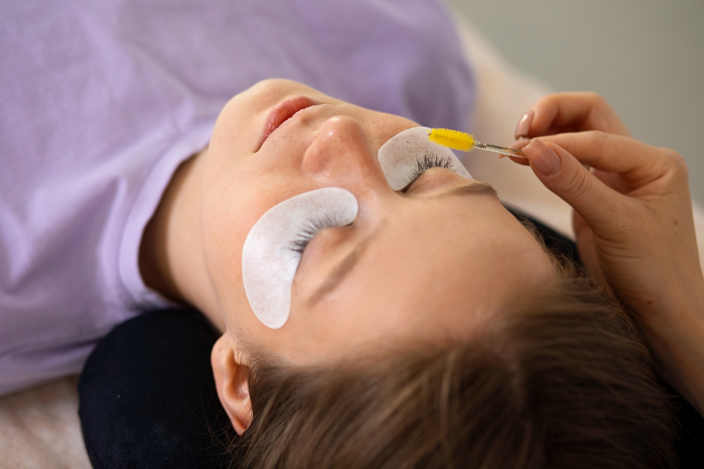

Definire & Stil
Sprâncenele sunt rama feței. La Divine Beauty, ne concentrăm pe crearea unei forme perfecte care să îți complimenteze trăsăturile naturale. Oferim servicii complete de stilizare, laminare și vopsire, folosind tehnici moderne și produse de top.
- Stilizare profesională
- Laminare sprâncene & gene
- Vopsire cu Henna sau vopsea clasică
- Tratamente de regenerare
Laminare Sprâncene
Soluția ideală pentru firele rebele sau care cresc în direcții nedorite. Prin laminare, obținem sprâncene mai pline, mai aranjate și cu un aspect "fluffy" care durează până la 6 săptămâni.
Galerie Rezultate
